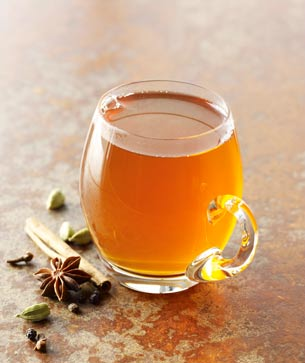

Energizing Chai

Prep time: 5 minutes Cook time: 20 minutes Makes: 1 quart
Ingredients
- 3 cups filtered water
- 2-inch knob fresh ginger, peeled and roughly grated
- 6 cardamom pods, crushed
- 3 whole cloves
- 1 cinnamon stick
- 3 black tea bags
- 1 1/2 cups almond milk
- Coconut sugar
Directions
- In a medium pot, combine the water, ginger, cardamom, cloves, and cinnamon. Bring to a boil, then reduce the heat to low, cover, and simmer for 15 minutes.
- Turn of the heat, then add the tea bags, cover, and steep for 5 minutes.
- Remove the tea, add the milk, sweeten to liking with coconut sugar, and heat until just warm. Pour through a strainer into 4 mugs.
- Store leftovers in a quart-size glass jar in the fridge.
For iced chai, skip warming the milk. Sweeten, strain, and pour over ice.
Recipe found in Run Fast. Eat Slow.:Nourishing Recipes for Athletes. by Shalane Flanagan and Elyse Kopecky